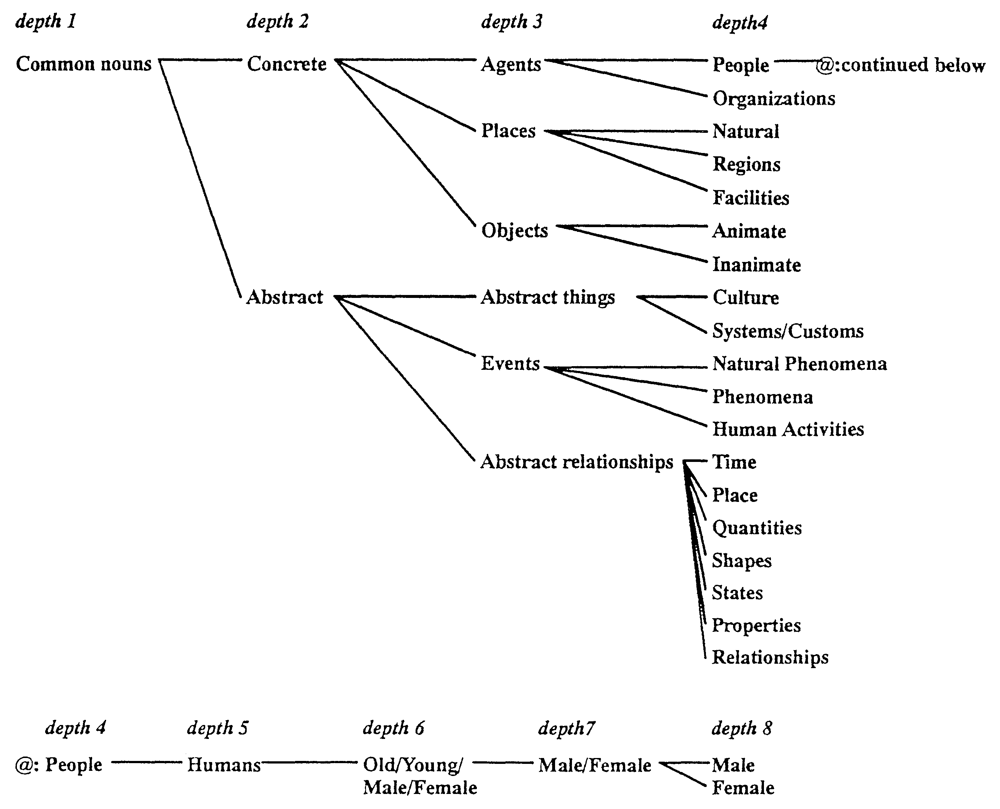
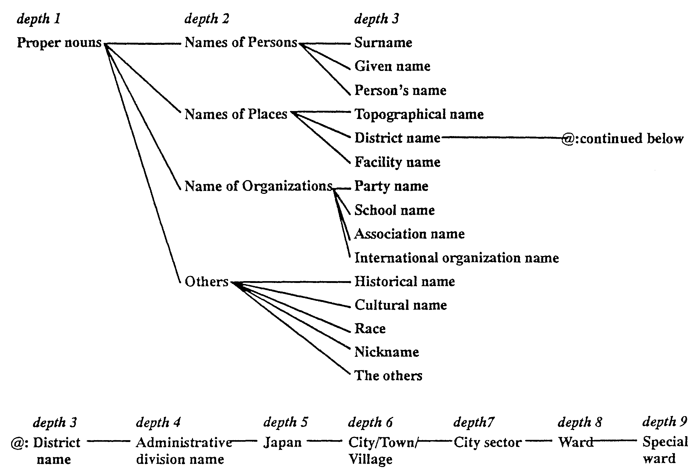
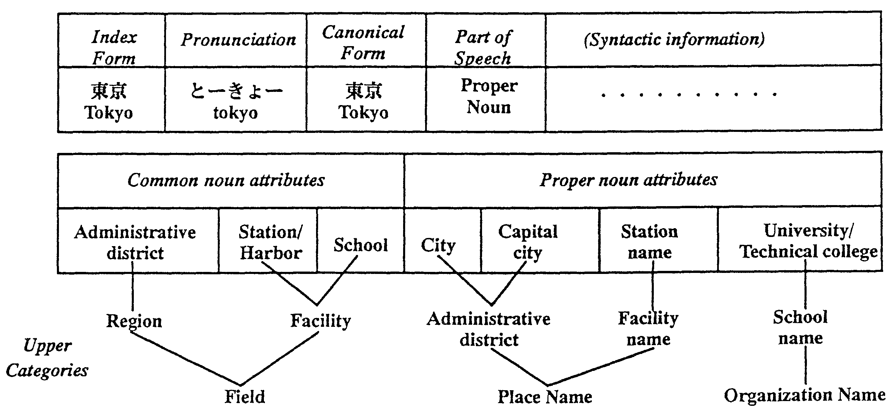
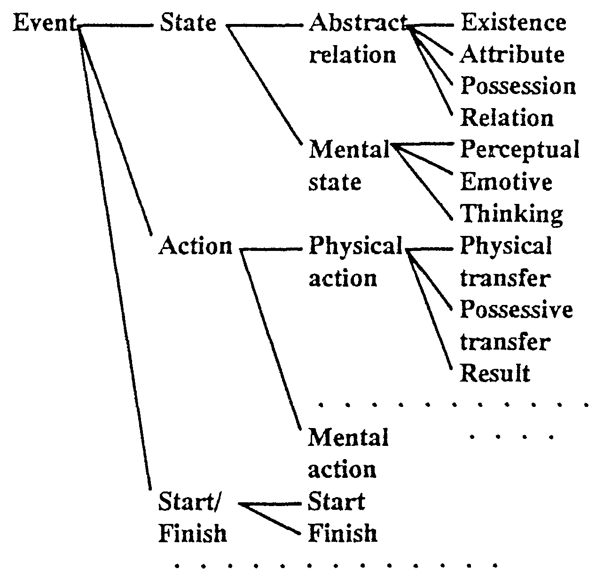

This paper shows how machine translation problems which come from conceptual differences between languages can largely be solved if the differences can be described with detailed semantic information in dictionaries. We show how this is possible using a semantic attribute system in which concepts are separated into around 3,000 categories. This information is incorporated in semantic word dictionaries (400,000 words) and semantic structure dictionaries (15,000 patterns). Appropriate selection of words is achieved by using the semantic relationships between words as encoded in the semantic dictionaries. These relationships can also be used across sentences to solve the problems of ellipsis supplementation, achieving a success rate of up to 98% in the translation of newspaper lead sentences. In addition, to avoid inappropriate literal translations, complicated Japanese sentences can be automatically rewritten so that they are easily translatable into natural English. Semantic information, is used with both Japanese and English syntactic information to correctly generate articles and number for 93% of noun phrases. As a result, our MT system (ALT-J/E: Automatic Language Translator - Japanese to English) with its detailed semantic dictionaries has the capability to translate 70% to 80% of sentences taken from lead paragraphs in newspaper articles so that they are understandable by native speakers.
Although many machine translation (MT) systems have been developed recently, it is not easy to achieve high quality MT because different languages are based on different concepts. These differences are particularly problematic when translating between languages which belong to different language families. However problems of conceptual differences can be largely solved if the differences can be described with detailed semantic information in dictionaries. We show how this is possible using a semantic attribute system in which concepts are separated into about 3,000 categories and combined with both "is-a" and "has-a" relationships. This information has been incorporated in semantic word dictionaries and semantic structure dictionaries. Our MT system (ALT-J/E: Automatic Language Translator - Japanese to English) uses a translation method based on the Constructive Process Theory of language, which focuses attention on the speaker's perception, and the semantic and syntactic knowledge encoded in the dictionaries to achieve high quality translation from Japanese to English.[7]
In Japanese to English MT, differences in concepts cause many problems. The most important is that of selecting the appropriate word or phrase when a word can be translated in many ways. Other typical problems include supplementation of the ellipsis of subjects and objects in Japanese, inappropriately literal translations and the generation of articles (a/the) and number (singular/plural).
Overall ALT-J/E with its detailed semantic dictionaries has the capability to translate 70% to 80% of sentences taken from lead paragraphs in newspaper articles so that they are understandable by native speakers.[8]
First, the current state of MT systems are described. In this section we discuss the current performance of MT systems, editing source language sentences (sentences to be translated) and target language sentences (translated sentences), various translation methods, and the use of dictionaries in MT systems. Second, the linguistic knowledge system which we have developed to solve the problems of conceptual differences is described. Third, we show how the linguistic knowledge system is used in MT.
MT Systems can be divided into those that run on mainframes and workstations and those that run on personal computers such as IBM PCs or NEC PCs. MT systems on personal computers are still inferior to MT systems on workstations due to lack of computing power.
The source text must usually be input manually. But in some current commercial MT systems, the source text can be input using an OCR.
Usually, translation between languages which belong to different language families is more difficult than translation between languages which belong to the same language family. Current MT systems do not approach the same level as a human translator. To obtain good results you need to preedit before translation, postedit after translation and compile a user dictionary. [15]
Now we will rough give an evaluation of current MT systems. If you do not provide a user dictionary and do not do any preediting and postediting, a typical Japanese to English machine translation system on a workstation or mainframe computer can translate only about 30% of the text. Can translate means here that the translated text is understandable by an English native, not necessarily a perfect translation. If you compile a user dictionary for the target text and tune up translation rules for the target text, about 70% of the text can be translated. If the target text is a kind of manual which involves many stereotyped expressions, about 80% or 90% of the text can be translated. You can translate even more effectively when you translate between languages which belong to the same language family. We estimate about 70% of a text can be translated without preediting the text and tuning up translation rules. Current MT systems are suited to the translation of large texts restricted in narrow domain.[9]
There are several machine translation methods. The simplest method is the Direct-translation Method which merely replaces source language words with target language words. In early MT systems, this method was adopted but did not translate at all well, especially between different language families. A more refined method is the Syntactic Transfer Method which syntactically analyzes a source text and then translates it. This method also cannot translate a text well if the translation is between different language families. A third method is the Semantic Transfer Method which semantically analyzes a source text and then translates it using both semantic and syntactic information. A forth method is the Interlingual Method which semantically analyzes a source text and represents the result using a semantic representation called an interlingua. The Interlingual Method generally requires deeper analysis than the Semantic Transfer Method. This method is good for translating between multiple languages. When you translate for only one language pair, the Semantic Transfer Method can translate more efficiently.
In almost all of current MT Systems the Semantic Transfer Method or the Interlingual Method is adopted. We use the Semantic Transfer Method in our MT system (ALT-J/E).
Another way of classifying MT systems is into RBMT (Rule Based Machine Translation) and EBMT (Example Based Machine Translation).[18] RBMT which uses rules as its knowledge source, is adopted by almost all MT systems. EBMT uses a database of translation examples as its knowledge source. This method was developed to overcome the difficulty of making translation rules manually on large scale. Some experimental MT programs are being developed using EBMT. EBMT can be used to complement RBMT in a hybrid MT system.
MT systems use various kinds of knowledge to translate a text. The most important kind of knowledge is linguistic knowledge. Linguistic knowledge is provided as dictionaries and a grammar. Generally if you provide a lot of linguistic knowledge in dictionaries the amount needed in the grammar is small, but if you only provide a little linguistic knowledge in the dictionaries the amount needed in the grammar is large. Because translation depends deeply on words, recently there is a tendency to store linguistic knowledge in dictionaries.
The choice of translation methods affects what dictionaries are required to translate a text. The Direct-translation Method requires only a source language to target language dictionary. The two Transfer Methods require a source language analysis dictionary, a source language to target language transfer dictionary and a target language generation dictionary. The Interlingual Method requires a source language to interlingua analysis dictionary and a interlingua to target language generation dictionary.
To maintain dictionaries more easily, some MT systems use managed dictionaries which are usually managed using database system. To effectively translate a text, processing dictionaries which are used on run time are created from manage dictionaries.
When bidirectional translation is required, for example automatic interpretation telephony, it is very convenient if one dictionary can be used for both analysis and generation. Such a dictionary is called a bidirectional dictionary. But different kinds of information are needed for analysis than for generation, so a complete bidirectional dictionary is hard to make.
Human translators use various kinds of knowledge such as linguistic knowledge, contextual knowledge, common knowledge and domain knowledge.
MT systems also use various kinds of knowledge are also used, but the most important of which is linguistic knowledge. While it is clear how linguistic knowledge is used to translate a text, it is still not clear how other knowledge is used to translate a text.
In the translation process, ambiguities arise in such things as word meanings and sentence structures. To overcome these ambiguities, we have provided two kinds of information for meaning analysis, compiled into dictionaries based on a precise semantic attribute system.
One kind is knowledge based on individual word's meaning. This has been compiled in the semantic word dictionary. The other is the knowledge related to the meaning implicit in the structure of an expression.
The meanings of an expression is not just represented by the sum of the meanings of every word in the expression. A structure expression is also a part of the meaning in natural language. So we have compiled a semantic structure transfer dictionary which determines the meaning of an expression according to the relationships between a verb (or adjective) its subject, object and complements.
Nouns can express several concepts. Which concept a noun expresses in a text is determined by its relationship with the other words in the text. For example the noun "school" is used as a place in "I walked straight to school" and as an organization in "The whole school celebrated the victory of its baseball team".
A semantic attribute system is a system which classifies concepts to use in expressing relationships between words. It represents a kind of common knowledge. Relationships between concepts and words are described in the word semantic dictionary.
In ALT-J/E, the semantic attribute system has a semantic concept hierarchy which represents "is-a" relationships and "has-a" relationships, with some 2,800 attributes (12-level tree structure) for common nouns, and some 200 attributes (9-level tree structure) for proper nouns.
The common noun attributes are used to show relationships between verbs and nouns and the proper noun attributes are used to show relationships between nouns. The proper noun attributes are more detailed attributes than the common noun attributes.
Fig.l shows the semantic attribute system for common nouns and Fig.2 shows the semantic attribute system for proper nouns.
|
 |
|
 |
In most MT systems, 30 to 50 semantic categories are used to classify concepts. As a more precise semantic attribute system, EDR (the Japan Electronic Dictionary Research Institute) plans to implement 500 categories.[4]
ALT-J/E is the first case of a system with a precision of some 3,000 categories used in a large scale dictionary (with 400,000 words).
To analyze Japanese sentences a Japanese word semantic dictionary is provided. The dictionary includes 100,000 common nouns, 200,000 proper nouns, 70,000 technical terms and, 30,000 other words, in total 400,000 words. Fig.3 shows an example of one record of the Japanese semantic word dictionary.
|
 |
Each record has an index form, pronunciation, a canonical form, syntactic information and semantic attributes. The syntactic information includes the part of speech, inflections, detailed parts of speech, conjunctive conditions and so on. As semantic attributes, it can have five common noun attributes and ten proper noun attributes. In the case of "Tokyo", there are three common noun attributes and four proper noun attributes. The average number of attributes is two.
To transfer Japanese words to English, a Japanese to English transfer word dictionary is provided. Each record of the dictionary has a Japanese index form, a meaning number, an English index form, English syntactic information, English semantic information, domain information and so on.
English syntactic information includes the part of speech, countability information, number information, article information, detailed parts of speech and so on. This dictionary is also used when the system generates English sentences. Two types of domain information is provided. One shows a special domain, for example mathematics, physics, politics, art and so on. The system is classified into 80 domains. The other shows a writing style, for example newspaper style, manual style and so on.
The English dictionary is used for the generation of English sentences. Each record includes the index form, its part of speech, a/an distinguishing, gender information, inflections, and derivational forms.
The basic structure of a sentence comes from the relationship between the main verb and nouns. A structure transfer dictionary is provided for producing basic sentence structures.
There are two kinds of structure transfer dictionaries; a common structure transfer dictionary and an idiomatic structure transfer dictionary. ALT-J/E provides 10,000 patterns for the common structure transfer dictionary and 5,000 patterns for the idiomatic structure transfer dictionary. In the common structure transfer dictionary, there is an average of 2.3 patterns for each verb.
Fig4. shows an example of the common structure transfer dictionary. Fig.5 shows examples of translations using these structures.
| ||||||||||||||||||||||||||||||||||||||||
| ||||||||||||||||||||||||||||||||||||||||
| ||||||||||||||||||||||||||||||||||||||||
| ||||||||||||||||||||||||||||||||||||||||||||||||||||||||||
The structure transfer dictionary describes under which conditions a Japanese verb should translate into which English word. The Japanese verb "tsukau(使う)" has many meanings and can be translated into various English words.
For example Pattern 1 shows how if the Japanese verb is "tsukau" and the noun phrase with a "ga(が)" particle, which shows a subject, is an Agent then the verb should be translated as "use". The noun phrase with a "ga" particle is translated as the English subject. The noun phrase with an "o(を)" particle, which shows an object is translated as the English object. The noun phrase with a "ni(に)" particle, which shows purpose is translated as the English prepositional phrase headed by "as".
If the Japanese verb is "tsukau" and the noun phrase with a "ga" is an Agent and the noun phrase with an "o" particle which shows an object is Money or Time, then the verb should be translated as "spend". The noun phrase with a "ga" particle is translated as the English subject. The noun phrase with an "o" particle which shows an object is translated as the English object. The noun phrase with a "ni" particle which shows purpose is translated as the English prepositional phrase headed by "on/for".
In the semantic word dictionary, each word has been given the lowest possible level of attribute. Conversely, in the structure transfer dictionary the highest possible level of attributes has been used. The pattern which matches the lowest level has priority. The Japanese sentence "Watashi-wa fuku-ni okane-o tsukau. (私は$服$に$お金$を$使う$。) " matches both Pattern 1 and Pattern 2, but Pattern 2 matches the sentence at a lower level than Pattern 1, so Pattern 2 is selected and the sentence is translated as "I spend money on clothes."
Fig.6 shows an example of the idiomatic structure transfer dictionary. It is similer to the common structure transfer pattern, but the pattern requires a specific noun phrase "shippo-o(尻尾を) [tail]" as a noun phrase with an "o(を)" particle.
| |||||||||||||||||||||||||||||||||||||
In the previous section, two examples of word selection were shown. This section describes two other examples of appropriate word selection. Fig.7 shows the two examples.
| ||||||||||||||||||||||||||||||||||||||||||||||||||||||||||||||||||||||||||||||||||||||||||||||||||||||||||||
| ||||||||||||||||||||||||||||||||||||||||||||||||||||||||||||||||||||||||||||||||||||||||||||||||||||||||||||
The first example is verb selection for "kakeru(掛ける)". "Kakeru" is a typical verb which has many meanings, that is, many transfer patterns. In ALT-J/E, "kakeru" has 17 common structure transfer patterns and 68 idiomatic structure transfer patterns.
The first three sentences are transferred using the common structure transfer patterns. When the Japanese object is an Art, Clock, Mirror, Paintings, Clothes or Rope and the noun phrase which shows location is House or Branch, "kakeru" is translated as "hang". When the Japanese object is Seasoning, Liquid or Medicine and the noun phrase which shows location is People, Concrete or Fire, "kakeru" is translated as "pour". When the Japanese object is Key and the noun phrase which shows location is House, Automobile or Box, "kakeru " is translated as "lock".
The last sentence is transferred using the idiomatic structure transfer patterns. If the Japanese object is "gan-o (願)" and then "kakeru" is translated as "pray".
The second example is of noun selection for "mure(群) [group]". The translation depends on the modifiers. When the modifier is "wolf", "mure" is translated as "pack". When the modifier is an Animal, "mure" is translated as "herd". The default translation of "mure" is "group". The rule which matches the lowest level has priority.
In natural language, components which are easily understood from the context are often omitted from sentences. Japanese in particular tends to omit the subject and object. In Japanese to English MT, these phenomena cause a serious problem as English cannot always omit these components. Thus, it becomes necessary to identify the omitted component to translate into English appropriately.[17]
For ellipsis supplementation, both verbal and semantic attributes are used. Fig.8 shows a part of the verbal semantic attribute system.
|
 |
Fig.9 shows an example of the rules for ellipsis supplementation. The relationships between the verbs and nouns is checked using the semantic attribute system. Fig. 10 shows an example of translations using ellipsis supplementation.
| |||||||||||||
|
| |||||||||||||||||||||||||||||||||||||||||||||
| |||||||||||||||||||||||||||||||||||||||||||||
Using the method achieves a successful supplementation rate of up to 98% in the translation of newspaper lead sentences.
The Automatic Rewriting Method automatically rewrites difficult to translate expressions in the source text to more easily translated ones. At the same time, it improves processing efficiency by reducing ambiguities in the syntactic and semantic analyses.[19]
Fig. 11 shows an example of an automatic rewriting rule and Fig. 12 shows a translation using it.
| |||||||||||||||||||||||||||||||||||||||||||
| ||||||||||||||||||||||||||||||||||||
In Japanese, there is no way of telling whether a particular noun is singular or plural by only looking at the noun itself. In English on the other hand, countable nouns must be either singular or plural. Fig.7 and Fig.13 show four methods that can be used to decide whether to translate a noun as singular or plural.[1]
| ||||||||||||||||||||||||||||||||||||||
Two methods are shown in the first noun phrase in sentence Fig.7, "a group of hunters", "group" is translated as singular by default, as there is no specific information about it. A group must however consist of more than one member, so there must be more than one hunter, "hunter" is translated as plural. The same arguments are used to translate "a pack of wolves" and "a herd of cattle". Note that for "cattle" the collective noun "cattle" is used instead of the plural "cows" to reflect the common usage.
In Fig.13, "university" is translated as singular by default. Because the meaning of the verb "recruit" is "to get or seek recruits", this implies that more than one student is being recruited so "students" is translated as plural. Finally, "high school" is translated as plural, because it is modified by "throughout the country" and a single high school cannot be spread throughout the country.
Thus four methods have been used to generate number: by default, depending on the meaning of the the noun phrase the noun is embedded in, depending on the meaning of the verb phrase the noun is embedded in or depending on the meaning of elements modifying the noun phrase itself.
ALT-J/E's processing of articles ("a/an" and "the") is quite simple. Noun phrases are indefinite by default. Indefinite noun phrases take "a/an" if they are both countable and singular, otherwise they take no article. A ooun phrase can be made definite in the following ways: if it is modified by a superlative adjective such as "best", by a general ordinal such as "next" or an ordinal numeral such as "first"; if it is not a classifier (like "group" in "a group of hunters") and it is modified by a prepositional phrase headed by "of" - "the leader of the group"; if it is supplemented during ellipses supplementation; or if the dictionary marks it as being unique - "the world". There is special processing for exceptions such as "go to school" where school takes no article.
ALT-J/E also replaces articles by possesive pronouns where English requires them, for example parts of the body or relatives - "I scratched my head, my mother raised her eyebrows." In Japanese "head", "mother" and "eyebrows" are not normally modified by possesive pronouns.
This processing correcdy generated articles and number for 93% of noun phrases when tested on newspaper articles. Most of the remaining errors require either common knowledge (for number) or a deeper understanding of the text (for articles). Currently research is being carried out to identify noun phrases that have been refered to previously, so that they can be made definite.
The precise noun and verbal semantic attribute systems and translation methods that use them can largely solve the translation problems which come from the conceptual differences between languages. MT systems with detailed semantic dictionaries based on the methods we proposed have the capability to translate 70% to 80% of sentences. To improve translation quality beyond this we must provide more precise common knowledge and be clear how the common knowledge is used in machine translation.
The authors wish to thank Mr. Nakaiwa and other members of the MT research group for valuable discussions, specially Mr. Bond who kindly corrected this paper. We also wish to thank the members of NTT Software Corp. and NTT Advanced Technology Corp. for helping to implement the ALT-J/E.